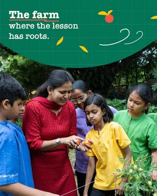

From brand campaigns to personal poems,
I write across formats, industries and perspectives.
The best teachers
don't always
teach a class.
The opening thought behind “Trees as Faculty”—a reel script that turns the trees on a school's campus into teachers in their own right.

“What if some of your child’s favourite teachers never actually taught a class?”01 / TREES AS FACULTY
The work,
in all its forms.
A selection of professional briefs, published campaigns and creative experiments.
Some words are written
for brands. Some are just mine.
Beyond the brief: long-form features, poetry, spoken-word writing, and the everyday observations that become stories.
There's a part of Bombay that rarely makes the glossy lists, but lives vividly in a local's mouth and memory.
In the soft, cold breeze
of late Delhi winters
I was met with a newfound affection
for the city I once called home.
There's always
another way
to tell it.
Hello, I'm Aastha.
I'm a copywriter with over three years of experience creating structured messaging across real estate, hospitality, education, photography and art, B2B, lifestyle, D2C and consumer sectors.
With a background in English Literature and an active practice in spoken word—both writing and performance—I move between expressive creative writing and tight, functional copy.
Have a story worth telling?